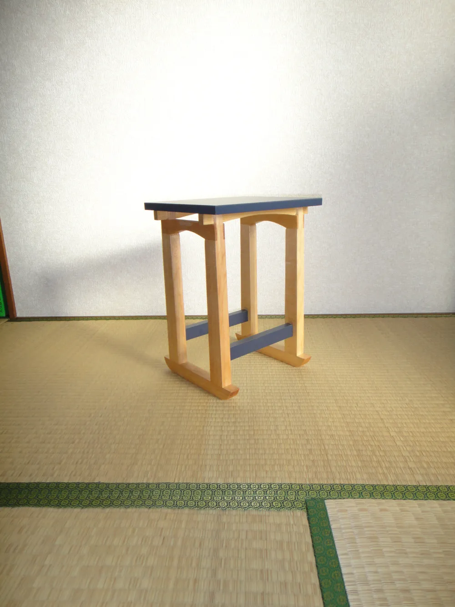
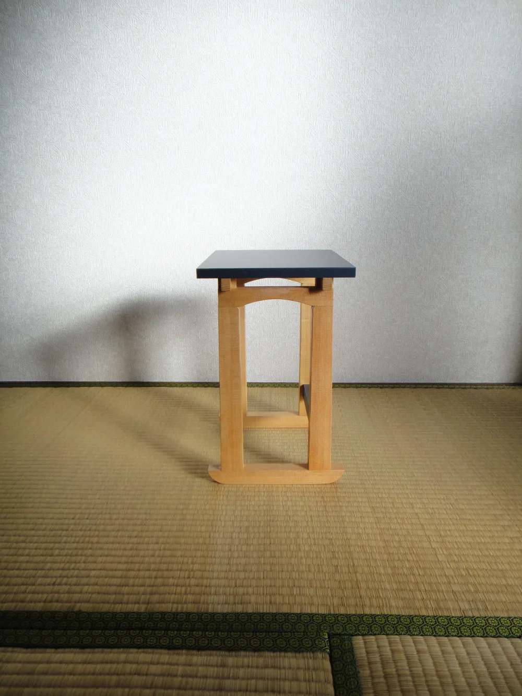

Tatamizuri Flower Stand
/畳擦り花台
A Flower stand designed for use on tatami,
inspired by the form of a torii gate.
Size: H400xW300xD260mm
Materials: Hemlock, Melamine
畳で使用する花台で、鳥居からデザイン、製作した
サイズ：H400xW300xD260mm
素材：ツガ、メラミン

